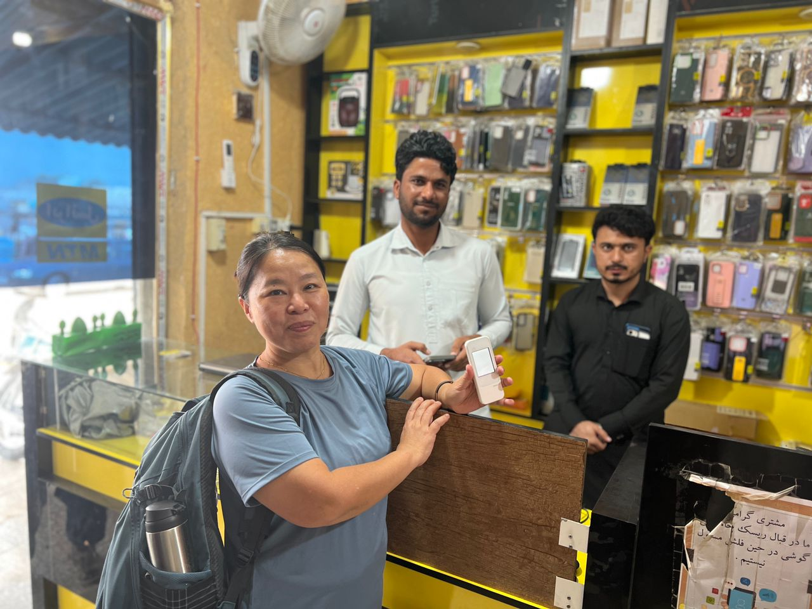

Real Story · 中文
在 Iran，网络也是 safety system 的一部分。
在 Iran 停留比较久时，我发现 foreigner 的 SIM card 不是可以一直正常使用。 一段时间之后，SIM card 可能会被限制或停用。
对 solo overland 来说，网络不是娱乐而已。 它关系到 navigation、translation、family location update、embassy contact、insurance、route check， 也关系到每天可以安心地继续走。
所以后来我去买 Wimax，作为 Iran 停留期间的 connectivity workaround。 这不是 glamorous travel photo，可是它是长途旅行真正重要的基础设施。


English Summary
Connectivity as travel discipline.
During Tuzi’s longer stay in Iran, foreigner SIM connectivity became limited after a period of use. To continue navigating, translating, updating family, and handling practical matters, she bought a Wimax device.
This field note records a simple but important principle: in solo overland travel, communication access is part of safety infrastructure.
Heart Statement
网络不是方便而已，是路上的安全绳。
On a long solo road, staying connected is not just comfort. It is how the traveller remains visible to the people who are waiting.